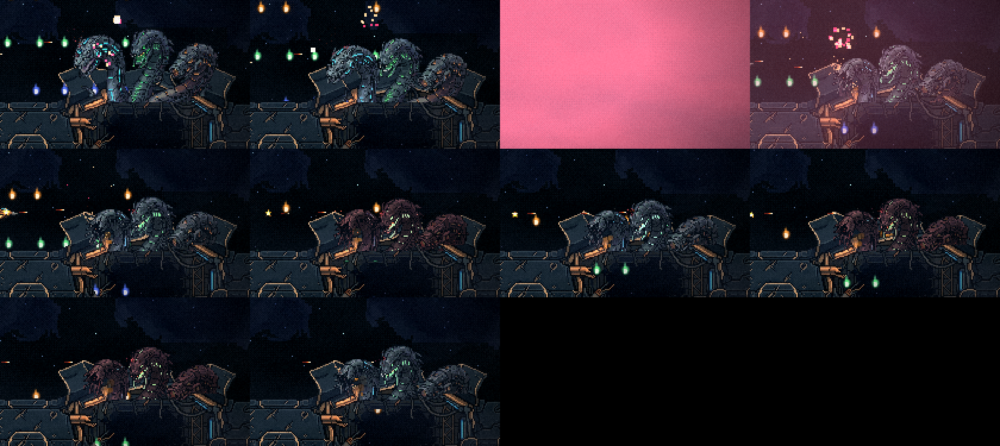
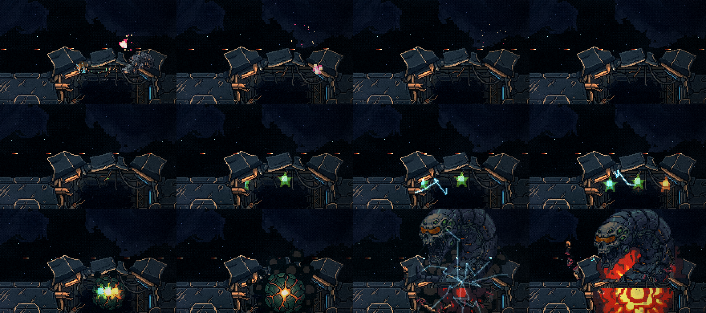
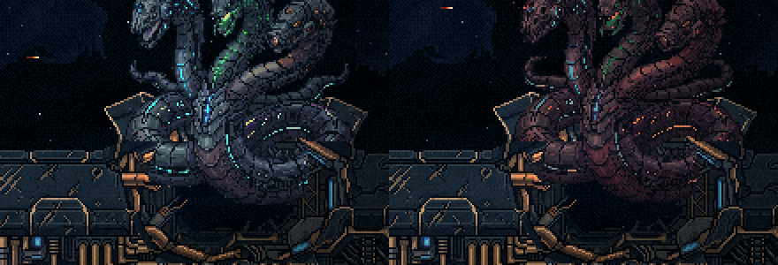
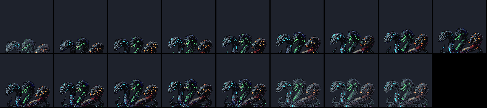
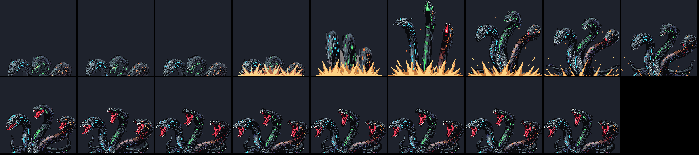
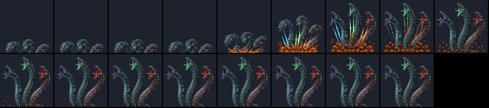
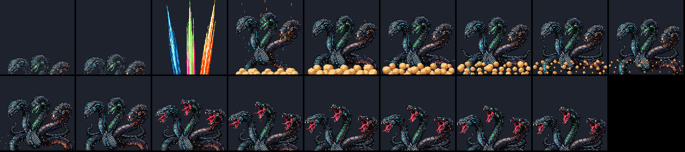
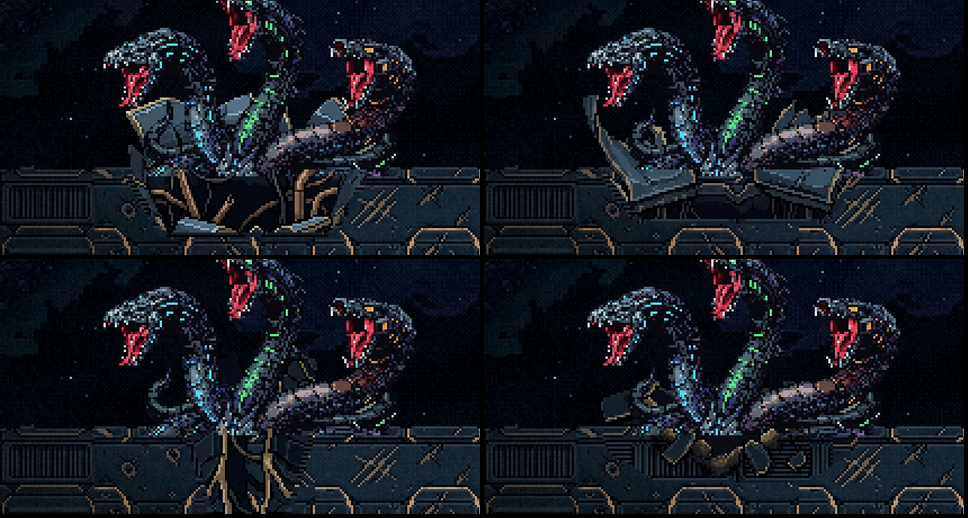

A luta da Serpente, revista do começo ao fim
29/10/2026, à noite · ← a S1b. Nada foi commitado.
Você: "o aparecimento da serpente já deixa a desejar, eu pedi para não deixar aparecer o corpo na aparição logo depois da investida, não na posição inicial dela … existe um quadrado mais escuro em volta da serpente … a chuva ficou boa … o jogador sempre vai estar para a esquerda da serpente". E o que fica: "A animação nova que escolhemos pode ser uma animação no set de animações dela, quando ela está na posição inicial e atirando … Precisamos urgente de uma animação decente para depois da investida. A chuva é reaproveitável, os efeitos estão bons na explosão do casco, mas aquela sombra para cobrir parte do corpo ficou feio".
Eu revi a luta inteira quadro a quadro, ampliada. A tabela tem o que achei em cada momento e o que já está feito.
1. A revisão, momento a momento
| momento | o que estava | agora |
|---|---|---|
| a explosão do casco | boa (você) | fica como está |
| a 1ª aparição, no rombo | eu cortava o corpo dela no rombo também: ela subia pela metade, entalada | feito: no rombo ela aparece inteira, como na S1, com o lábio do rombo na frente das roscas. O corte só vale depois do bote. |
| parada no rombo | quase sem movimento: ondulação de 6 px, presa ao corte | feito: as três alturas da S1 e a respiração de 14 px. E o erguer virou o gesto de ataque dela no rombo: ela se ergue e o tiro sai da boca de quem atira, quando as bocas abrem. |
| a rachadura e a trava | na resolução do jogo, a lombada e a ponta branca quase não apareciam | feito: a lombada ficou maior; a trava ficou mais larga (13 px) e solta faíscas brancas |
| a aparição depois do bote | o "quadrado escuro": a bacia do rasgo pintada com o fundo do rombo, mais uma faixa escura em toda a largura dela, para esconder o corpo. Ficou feio. | a refazer, com a arte da §2: uma animação de saída já desenhada cortada na linha do casco, e um buraco de casco rasgado de verdade. Nada mais cobre o corpo dela. |
| a chuva | boa (você) | feito: mais justa para quem está à esquerda. O vão tem 3 gotas (eram 2) e anda no máximo uma vaga de uma onda para a outra (antes era sorteado em qualquer lugar, e a nave, a 110 px/s, não alcançava). As ondas vêm a cada 0,55 s (eram 0,35) e caem a 100 px/s. |
| o espaço para desviar | o bote podia travar a 24 px da borda esquerda, sem saída para a esquerda | feito: a trava não passa de x 60: sempre há espaço para desviar pela esquerda |
| a troca de 3 para 2 cabeças | um quadro inteiro da tela piscava rosa, a cor de dano  | feito: sem o flash. Ficam a cadeia de estouros e o tremor. |
| a cena da fusão | a estrela que você tirou na S1 voltava dentro do rombo (o halo das luzes usava a mesma textura), e o lábio estourava em blocos vermelho-lava  | feito: o halo é um brilho redondo, e o lábio solta o cascalho e o pó do próprio casco |

2. A aparição depois do bote (para escolher)
A ideia nova: a animação já nasce cortada na linha do casco. Gerei a saída no PixelLab a partir da arte dela, com a borda de baixo do quadro sendo o chão: o corpo abaixo da linha nunca existe e não precisa ser escondido. Ela sai de um buraco de casco rasgado (arte gerada sobre as placas da proa), com o fundo do buraco atrás dela e as placas da borda na frente dos pescoços.
As maquetes estão na escala e na cor do jogo, sobre a foto da arena:
Os clipes inteiros (17 quadros cada, ampliados):




3. O buraco (para escolher)
Quatro buracos gerados sobre as placas da proa, cada um com a aparição E2 + erguer na pose final:

- H1, o casco estourado (recomendo), em cima à esquerda: placas dobradas para cima e cabos rompidos lá dentro. É da mesma família do rombo A.
- H2, as pétalas, em cima à direita: duas placas abertas para fora.
- H3, a fenda, embaixo à esquerda: mais estreita que ela, então as roscas ficam sobre o casco. Não serve.
- H4, a crista estilhaçada, embaixo à direita: um buraco raso, com cacos.
No jogo, o buraco abre no estouro do bote, com o cascalho e o clarão que já existem, e depois se fecha: a cura vira o buraco se fechando quadro a quadro, e não mais a sombra.
Para você escolher
- A aparição depois do bote: E2 + erguer (recomendo), E1 (limpa à mão) ou E2 sozinha.
- O buraco: H1 (recomendo), H2 ou H4.
Com as duas escolhas, eu gero a mesma aparição para as formas de 2 e de 1 cabeça, troco a sombra pelo buraco no jogo e filmo a luta inteira de novo.